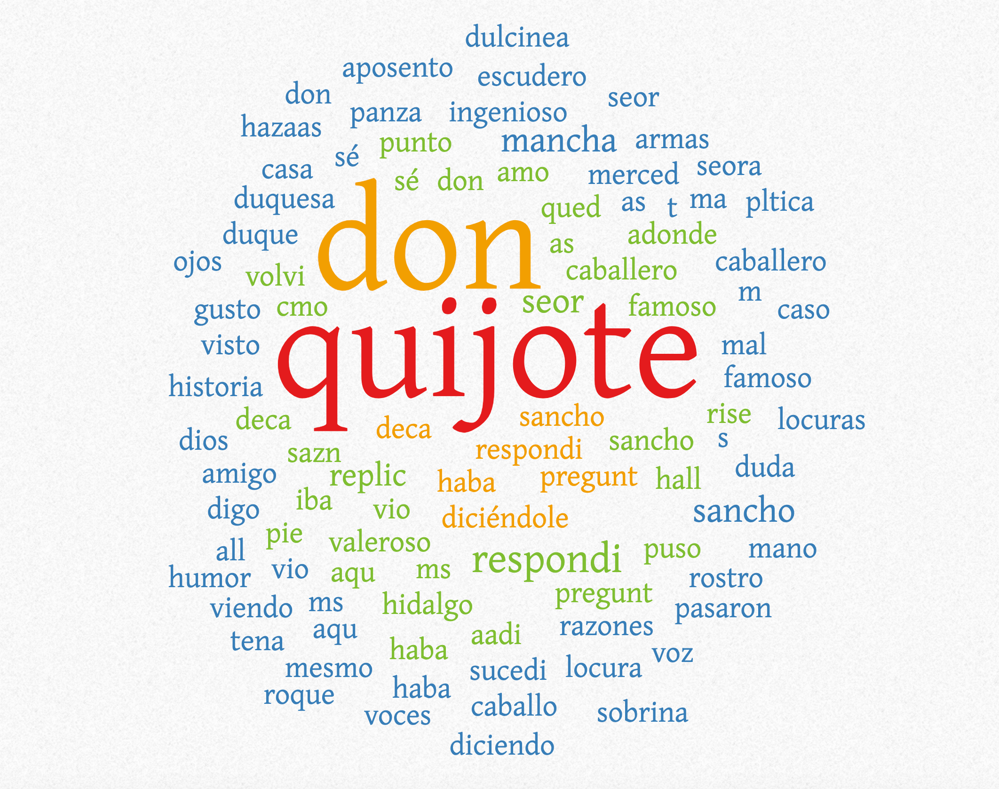

Digital Humanities Blog
Use Digital tools to solve Humanities problems.
Class One
Digital Humanities. (Tuesday September 3) - U70 Classroom.
Why I chose this course. who am I? My name is Emiliano Sal. I am a third semester student at the SDU. I am studying Msc in IT Product design in Kolding. I've enrolled in this course because it was the one I most liked among the list of suggested course from the master. Also I wanted to attend to the University in Odense. I am from Argentina and I have been living in Denmark for 3 years. I have been working as a Software developer in Copenhagen. I am interested in learning about digital tools and how to use them to solve humanities problems. I am looking forward to learning about the digital humanities course and how to use digital tools to solve humanities problems.
Class Two
Digital Humanities. (Tuesday September 10) - U70 Classroom.
Browse, select 2 DH papers and write a blogpost to reflect!:
- Write an introduction that summarizes the papers.
Class 4 reflections
Digital Humanities. (Tuesday September 24) - U130 Classroom.
Class 4 reflections on Quantitative text analysis:
In the fourth class of the course we learned about Quantitative text analysis. First we learned about the story of quantitative text analysis. I was blown away by the fact that the word clouds were first used in the 19th century and was reintroduced again by flicker in 2004 (with some minor appearances from once in a while). Now is widely use and is a useful tool for analysis and visualizations. We learned how to use tools to make word clouds, tag-pies and tag-spheres for quantitative analysis. I used the same text in all the tools: “Don Quijote de la mancha” from Miguel de Cervantes.
